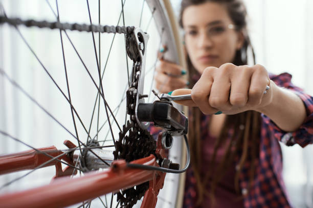

Safety Information
Understanding bicycle safety is crucial for all riders. Below you'll find important information about accident rates, safety measures, and age-related statistics.
There's no definite data on the number of bike accidents — less serious accidents are often unreported. Nonetheless, let's examine fatality rates among cyclists in accidents: it's less than you might think.
Bike Accident Fatality Rates, By Age and Region
| Age Group | Urban Areas | Rural Areas | |||
|---|---|---|---|---|---|
| City Center | Suburbs | Industrial Zones | Country Roads | Highways | |
| 0-14 | 0.3% | 0.5% | 0.2% | 1.2% | 0.1% |
| 15-29 | 0.8% | 0.7% | 0.6% | 0.4% | |
| 30-44 | 1.1% | 0.9% | 1.5% | 0.6% | |
| 45+ | 1.3% | 1.8% | |||
As you can see in the table, there are numerous factors that can lead to bike accidents. Generally, highways and crowded streets are more dangerous for cyclists than quiet country roads or separated bike paths.
Unfortunately, cities still have a long way to go in the way of preventing bike accidents. Some recent docucmentaries and other journalistic works, such as Lé vélo n'est pas un sport de glisse, are raising awareness around how cities can improve safety for all cyclists.
Riding safe means maintaining your bike regularly. We recommend tuning up your bike at least every six months. Any bike shop will do this readily. There are also organizations that will teach you important skills like replacing inner tubes in most cities.
But beyond these biyearly checkups, it's best to check-in on your bike's health on a regular basis to minimize the risk of accidents. Before you go on any bike ride, we recommend that you test:
- Your breaks
- Whether your tires are properly inflated and keep pressure (around 3.5-4 PSI for most city bikes)
- Your lights and reflectors
- Your chain and gear systems
And remember — especially in urban areas, wearing a helmet and visible clothing are essential! Ensure that your helmet is properly adjusted before going out.
Yes, some age groups are more susceptible to bike accidents. Injuries and fatalities are most frequent among young adults (ages 18-29), and are especially prevelent among riders under 24 years of age.
There are several factors that lead to these demographic differences. Young people are more likely to use bikes as a primary mode of transit, and may be less willing or have fewer financial resources to maintain them. They might also be more likely to engage in risky activities, such as biking against the direction of traffic or failing to yield when required.